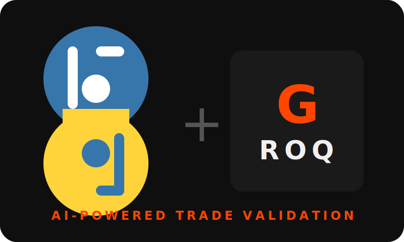

44 rules. One AI. No bad trades.
Every trading system has the same problem. The setup looks good. The chart agrees. And then the trade opens at exactly the wrong moment — wrong session, correlated pair already running, spread too wide, trend actually pointing the other way.
The Matrix Validation Server exists to catch that moment before it costs you.

Every signal from your cBot goes through the server before a single order is placed. The server doesn't guess. It runs the signal through 44 individual filter blocks, one by one, each checking a specific condition.
Is this a valid trading window for this pair, or is liquidity too thin?
Is price actually moving in the direction the bot wants to trade, or just retracing?
Is the currency behind the signal showing real momentum, or is it flat?
Has the parabolic SAR confirmed the move on the relevant timeframes?
Is there already too much exposure on correlated pairs? Is drawdown within limits?
Spread, zones, divergence, momentum, box structure, direction bias — every angle a careful trader would check by hand, checked automatically on every signal.
The last check isn't a rule. It's a question.
The server sends the full signal context — pair, direction, score, zone data, session, ATR, RSI, currency strength readings — to a large language model. The AI layer runs with automatic provider fallback: if the primary model is unreachable, the next one takes over, so a single provider outage never blocks a trade.
The AI reads everything and returns one of two answers: ALLOW or BLOCK. It also explains why. Every decision is logged — what the AI saw, what it concluded, and how long it took. Response time is typically under two seconds.
This isn't AI for the sake of AI. The 44 filters handle the mechanical rules. The AI handles the context — the things that are hard to express as a rule but obvious when you see the full picture.

€5–10 a month from any provider. The server is a Python application — no heavy dependencies, no database beyond SQLite, no cloud services required beyond an API key for the AI provider.
Every signal check in real time — what came in, which blocks it passed, which it failed, and what the AI decided. You can watch your system think.
The server runs in the background. You don't watch it. That's the point.
Connects to GapTrader, FutureTrader, and MatrixBasket Hybrid — or runs standalone as a filter layer for any cTrader cBot that can make an HTTP request.
Get the Matrix Validation Server